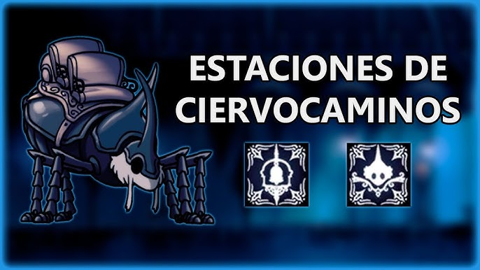

El Último Ciervo (o Viejo Ciervo) es un personaje NPC de Hollow Knight, un enorme y anciano escarabajo que transporta al jugador a través de los "ciervocaminos". Como último sobreviviente de su estirpe, conecta las distintas zonas del reino subterráneo de Hallownest, compartiendo historias sobre la zona mientras se lamenta del estado actual del mundo. Función: Actúa como el sistema de viaje rápido del juego. Localización: Se encuentra al tocar la campana en las estaciones de ciervos (previamente desbloqueadas con Geo). Historia: Antiguamente, su raza transportaba mercancías y habitantes por todo Hallownest. Evolución: Tras encontrar el nido de los ciervos y descubrir un huevo eclosionado, su nombre cambia a "Viejo Ciervo". Base: Está basado en un escarabajo rinoceronte. El personaje se alegra de volver a servir y conocer nuevos lugares gracias al Caballero, lo que le da un propósito tras la desaparición de su especie.
